Tester handbook · 20 Nov 2026 · beta, confidential
SQUAWK
A groovebox for iPhone. Drums, synth and sampler on one screen, played like a small device.
Beta: what you do not SAVE is gone when you quit the app.
To keep your work: tap 2ND, then the pad below the printed word SAVE (bottom row, far left). Then tap the pad with the lit light. That is your current track. Once saved, that slot keeps your later changes too.
After a restart, RAIN plays again. Your saved track is still there: 2ND, then LOAD (the pad next to SAVE), then tap the pad that shows your two letters.
Going to another app is fine. Quitting the app, iOS closing it, or an update starts SQUAWK fresh. Details in chapter 21.
How to read this: keys look like LIVE and ●. Text on the display looks like PRESS ▶ TO PLAY. “2ND, then X” means: tap 2ND, let go, then tap X. L and R are the left and right knob.
Part 1Play
Five short chapters. Read them once, with SQUAWK in your hand.
01The one picture
SQUAWK is a loop that plays in a circle. Three players are on it: drums, synth and sampler. They always play together.
The switch says whose turn it is on the 16 pads. The keys below the pads say what the pads do. When ● is red, what you play or tap stays on the loop.
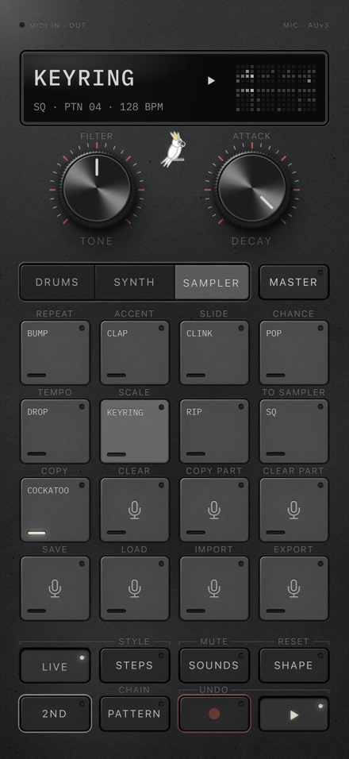
1234567
1
Display. Big: the sound the knobs change. Small, line 2: what is happening right now.
2
Two knobs. Drag up or down. They change the sound you played last. Double-tap one to reset it.
3
DRUMS · SYNTH · SAMPLER. Whose turn it is on the pads. All three keep playing. MASTER next to it puts effects on everything.
4
16 pads. What a pad does is written on it.
5
LIVE · STEPS · SOUNDS · SHAPE. What the pads are. LIVE: they play. STEPS: each pad is one moment of the loop. SOUNDS: pick a kit, instrument or bank. SHAPE: change the sound. Lost? Press LIVE.
6
● and ▶. ▶ plays and stops. ● writes onto the loop. It glows red while it is on.
7
2ND. Opens the small words printed above the pads and keys. Tap 2ND, then the one you want.
Everything else on the device is for later. You do not need it to make a beat.
What ● writes, and what works without it. ● writes steps and recordings: a tap in STEPS sets or removes a step, and what you play while ▶ runs stays on the loop. The knobs, STYLE and all 2ND functions work without ●. They act at once, even with ● off. If something went wrong, 2ND, then ● takes it back.
02The first five minutes
From the first sound to your own beat. Do it in this order.
The orange light. On the first start a short tour shows you around. The control to use next breathes orange, and line 2 of the display names the step. Tap the orange control and the next step follows.
Any other key, the switch, 2ND or a knob ends the tour quietly. You can play the pads while it runs.
Follow the recipe below, not the orange light. The first moves are the same: ▶, SYNTH, a pad. Then they go different ways. When you tap SAMPLER at 0:30, the tour ends quietly. That is fine.
The tour shows where things are. It does not save your work, and it does not turn ● off for you.
In this beta, the tour starts again each time you open SQUAWK after quitting it.
0:00
Listen
Press ▶. A beat plays. It is called RAIN. Tap the pads and play along. These are drums.
0:30
Meet the other two players
Turn the switch to SYNTH. The pads are notes now. Turn it to SAMPLER. The pads are sounds now. All three keep playing.
Press ▶ to stop.
1:00
Get an empty loop
Press PATTERN. Tap the pad marked NEW. This loop is empty, so nothing starts. Line 2 says EMPTY · LIVE, THEN PADS OR 2ND STYLE. That is what you want.
Turn the switch to DRUMS. Press STEPS. Each pad is now one moment of the loop, numbered 1 to 16.
RAIN is still there, on the first pads in PATTERN. Your new loop sits next to it.
1:30
Tap your own beat
Turn the left knob until the display says KICK.
Press ●. It turns red.
Tap 1, 5, 9 and 13.
Press ▶. That is your kick. In STEPS there is no count-in: the loop starts at once.
Turn the left knob until it says CLAP. Tap 5 and 13.
Turn it further until it says CL HAT. Tap 3, 7, 11 and 15.
A wrong step? Tap it again, and it is gone.
3:00
Play something on top
Turn the switch to SYNTH and press LIVE. ● is still red, so the notes you play now stay on the loop. Play a few notes. They snap to the nearest step.
Press ▶ to stop. In LIVE, stopping also turns ● off. Press ▶ again and listen.
4:00
Twist it
Check that ● is off. With ● on, held effects are written onto the loop.
While it plays, press MASTER. Hold an effect pad. Let go, and the beat is back. Press MASTER again to leave.
4:30
Keep it
Made a mistake? 2ND, then ●: UNDO. Do both again to go further back.
To keep your beat in this beta: 2ND, then SAVE (the pad bottom left; SAVE is printed above it), then tap the pad with the lit light. Line 2 says SAVED TR 01 · AA or similar. The two letters are the name of your track.
After you quit, SQUAWK starts with RAIN again. Your beat is not lost. To get it back: 2ND, then LOAD (the pad next to SAVE), then tap the pad that shows your two letters.
Next: put your own voice on a pad (chapter 4), or pick one of the eight ways in part 2.
03The map
The switch says who. The key says what. The 16 pads are always 16 of something.
DRUMS
SYNTH
SAMPLER
with MASTER on
LIVE
16 drums
16 notes
16 sounds of a bank
16 effects, hold one
STEPS
16 steps
16 steps
16 steps
16 steps for effects
SOUNDS
16 kits
16 instruments
16 banks
same as without
SHAPE
16 pages
16 pages
16 pages
ends MASTER
PATTERN is the same everywhere: 16 loops of this track.
Lost? Press LIVE
LIVE closes SOUNDS, PATTERN, SHAPE and every second function. The pads play sounds again.
MASTER stays as it is. If MASTER is lit, press it.
If 2ND is lit, press 2ND.
● stays as it is. If it is red, press it when you are done writing.
One word, two sizes: PART
The switch picks a part: DRUMS, SYNTH or SAMPLER. Inside each part there are 16 kits, 16 instruments or 16 banks. Each of them has its own steps, and all of them play at the same time. So you can have two kits or two synth instruments in one loop. SOUNDS picks the one you edit; the others keep playing.
So picking another kit in SOUNDS does not change the sound of your beat. Your beat stays on the old kit. The new kit has its own steps, usually none.
Your beat on another kit:2ND, then COPY PART, then tap the new kit. Now both kits play the beat, and the new one is picked. To hear only the new one: press SOUNDS, tap the old kit, then 2ND, then CLEAR PART.
This works on the loop you are in. Do it once for each loop.
Each drum lands on the same pad number. Kick and closed hat sit on the same pads in every kit except HAND. Other drums may land on a different sound.
Synth instruments work the same way.
COPY PART, CLEAR PART and RESET · PART work on the kit, instrument or bank you have picked, not on the whole part.
Three colours
White means on, picked or playing.
Red means writing. A blinking red light means: tap again to confirm.
Orange means: this is the next step of the tour.
Unsure? Hold the key
Every key explains itself.
Hold any key for half a second. It still does its job, and line 2 explains it as scrolling text. Let go to stop.
For a printed word, tap 2ND, then hold the word’s key or pad.
Wait about 1.5 seconds without touching anything. Line 2 explains where you are.
04Your own sound
Your voice on a pad, in under a minute.
Stop the beat with ▶. Recording only works while it is stopped.
Turn the switch to SAMPLER. Press LIVE if another key is lit.
Press ●. It turns red. The first time, iOS asks for the microphone. Allow it.
Now hold a pad with a microphone symbol. Sing, clap or knock. Let go. SQUAWK plays it back once.
Press ● again to turn it off.
Tap the pad. That is you.
Only holding records. A short tap only plays the pad, even with ● on. Playing never records over a sound.
SQUAWK cuts the silence and sets the level. The pad gets a two-letter name, like AA.
A recording can be up to 60 seconds long.
With ● on and the beat stopped, holding a pad that already has a sound records over it. 2ND, then ● brings the old one back.
If line 2 says HOLD AGAIN, hold the pad once more. If it says NO MIC · ALLOW IN SETTINGS, allow the microphone for SQUAWK in the iOS Settings.
Your sounds belong to the device, not to one track. Every track can play them.
An empty loop: PATTERN, tap NEW. A whole empty track: 2ND, then LOAD, tap the slot marked NEW.
Remove one wrong hit?
STEPS, ●, tap the step. On drums, pick the drum first with the left knob.
Make one drum louder or quieter?
Tap DRUMS on the switch and press LIVE. Tap the drum once; the display shows its name. Press SOUNDS. Turn the right knob (LEVEL). Press LIVE. LEVEL is for this one drum, on every step. Careful: in SOUNDS, do not tap a pad. On DRUMS each pad there is a kit, and a tap picks that kit. Second way, for one step only: STEPS, ●, hold the step, turn the right knob (VELO).
Make a synth or sampler sound louder or quieter?
The same: play it, press SOUNDS, turn the right knob (LEVEL), but do not tap a pad there. On SQUELCH: SHAPE, page DRIVE, right knob.
Silence one sound?
2ND, then SOUNDS (MUTE). Tap the sound. Tap it again to hear it.
Play faster or slower?
2ND, then TEMPO. Turn the left knob.
Make the loop shorter?
2ND, then TEMPO. Tap a pad: its number is the new length.
Use two kits at once?
Just do it. Pick another kit in SOUNDS and give it steps. The first kit keeps playing.
Play my beat on another kit?
Picking a kit does not move your beat. 2ND, then COPY PART, tap the new kit. Then SOUNDS, tap the old kit, 2ND, then CLEAR PART. Once per loop (chapter 3).
Change the key?
2ND, then SCALE. The pads pick the scale, the left knob the root note.
Turn loops into a song?
2ND, then PATTERN (CHAIN). Tap the loops in order. Press ▶.
Take something back?
2ND, then ●. Do both again to go further back.
Keep my beat?
2ND, then SAVE, tap the pad with the lit light.
Share it as audio?
2ND, then EXPORT. It opens when you lift your finger.
Stop writing?
Press ●. It stops glowing red.
Get out of anything?
LIVE. If MASTER or 2ND is still lit, press it too.
Part 2Eight ways in
Each way starts with what you get, then the few moves that get you there. The picture next to it is the store image for that idea. Know these eight and you know SQUAWK.
06 · Tap a beat
Build it by hand.
You get a beat you placed step by step.
Press STEPS. Each pad is one moment of the loop.
Press ●. Now a tap sets a step, and a tap on a set step removes it.
The left knob picks the drum, the note or the sampler pad. The right knob picks how loud new steps are (VELO).
Press ▶ to hear it. Keep tapping while it plays.
On drums, only the steps of the picked drum are bright. A tap with ● changes only that drum, so kick and hat can share a step.
Without ●, a tap only lets you hear the step. Line 2 says ● = WRITE STEPS.
Hold a step to hear it and see what is on it. With ●, hold a step and turn the left knob: the step moves to another drum or note.
More life: 2ND, then REPEAT, ACCENT, SLIDE or CHANCE, then tap steps (chapter 18).
In STEPS, ● stays red until you press it. Turn ● off when you are done writing steps.
16 steps with accent, slide and chance. No AI.
Video C “Build it”, 17 s: kick on 1, 5, 9 and 13, the left knob picks CLAP and CL HAT, then PATTERN jumps to a full pattern.
07 · Play along and record
Drums, synth, sampler. One device.
You get what you played on the pads, on the loop, in time.
Pick a part with the switch. Press LIVE.
Press ●, then ▶. From a stop, SQUAWK counts in one empty loop first.
Play the pads. Each hit snaps to the nearest step.
Press ▶ to stop. This also turns ● off. Press ▶ again to listen.
New hits add to what is there, like a tape.
If the loop is already playing, press ● and play. There is no count-in then.
While you record and the loop has no drums yet, a click plays. It stops once a drum is in. The click never reaches EXPORT or MIDI.
Each recording is one undo step: 2ND, then ●.
Without ●, the pads just play. Nothing is written.
All three play at once. One screen, no menus.
08 · Your voice
Your voice on the pads.
You get your own sounds on the pads: one per pad, or one recording across all 16.
Stop the beat. Turn the switch to SAMPLER and press ●.
One sound on one pad: in LIVE, hold a pad, make a sound, let go (chapter 4).
A whole bank: press SOUNDS, hold a free bank, make the sound, let go.
Press ● again when you are done.
SQUAWK decides what a bank becomes. A short sound with a pitch becomes NOTES: the same sound on all pads, in the scale. A longer recording becomes SLICES: cut at its hits, up to 16 pieces, one per pad.
Try this: hold a free bank and count from one to eight. Every number becomes a pad.
Single pads in a bank make it a KIT: 16 sounds, each with its own steps.
Sing, clap or knock. Play it in your beat.
Video A “Make it”, 25 s: record a knock onto a pad, filter it in SHAPE, tap a beat in STEPS, press ▶, add an effect.
09 · Twist it live
Twist the beat live.
You get a beat you bend with your fingers while it plays.
Press ▶, then MASTER. The pads are 16 effects on everything.
Hold an effect pad. Let go, and the beat is back.
While you hold it, the left knob sets how much (AMOUNT). The right knob sets its character, for example the echo time.
With ● on, held effects are written onto the loop. Turn ● off to just play them.
Silence single sounds: 2ND, then SOUNDS (MUTE), tap a sound.
Only one part: in MUTE, tap the part on the switch that is already lit. The other two go quiet (SOLO). Tap it again for all.
Hold an effect. Let go, and the beat is back.
10 · Start from a style
Everything included.
You get a finished piece to build on, with one tap.
2ND, then STEPS. STYLE is printed above STEPS.
The pads show 16 pieces. Tap one. It plays.
Tap another to hear the next. STYLE stays open, and ▶ starts and stops without closing it.
Press LIVE and build on it.
A tap replaces the whole track: all loops, tempo, swing, key, kit and sound settings.
If the track holds your own work, SQUAWK asks first: REPLACE YOUR TRACK? TAP AGAIN. The red light blinks. Tap the same pad again to replace. Anything else cancels.
An empty track, or a piece you have not changed, is replaced without asking.
Changed your mind? 2ND, then ● brings back what was there.
Pads 1 to 7 are full pieces with four loops each. Find the other three loops in PATTERN. Pads 8 to 16 are short starting points, one loop each. The list is in chapter 18.
No in-app purchases, no subscription.
11 · Change a sound
16 pages for every sound.
You get a sound that is yours. Start with the knobs, go deeper only when you want.
Knobs: play a pad, then turn TONE and DECAY. They change the sound you played last.
Filter and fade-in:2ND, then turn a knob. Both knobs now set FILTER and ATTACK. 2ND stays lit. Press 2ND again to go back.
Other sounds:SOUNDS picks another kit, instrument or bank. Here the knobs set two more things, for example DRIVE and LEVEL.
Everything:SHAPE opens 16 pages. A pad picks a page, the knobs set it, the display draws it.
Every change belongs to that sound in this track and is saved with it.
Back to how it came: 2ND, then SHAPE (RESET), then SOUND, and tap it again to confirm.
Video B “Shape it”, 22 s: a free bank becomes a NOTES bank, then SHAPE with LFO and SPACE.
CHAIN 3TAP PATTERNS IN ORDER · ▶ = PLAY
12 · From loop to song
You get a song: loops played one after another, and a WAV file of it.
Another loop: press PATTERN, tap a pad. While it plays, the change happens at the end of the loop. PATTERN stays open so you can listen through.
A variation:2ND, then COPY, tap a free loop. You keep working on the copy.
A song:2ND, then PATTERN (CHAIN). Tap the loops in order, up to 64. Press ▶. The status line shows where you are, for example 1/4.
Audio:2ND, then EXPORT. You get a WAV of the loop, or of the whole chain.
Tapping a single loop in PATTERN ends the chain. 2ND, then ● brings it back.
Only one part in the file? Use SOLO first (way 09).
13 · Keep and share
Your WAV pack becomes a kit.
You get your tracks kept on the device, as files, and other people’s sounds on your pads.
Keep:2ND, then SAVE. Tap the lit pad to keep the current track, or a free pad for a copy.
Open:2ND, then LOAD. Tap a track. A slot marked NEW starts an empty one.
As a file: in SAVE, the last pad (FILE) writes a backup file with the track and its sounds. 2ND, then IMPORT reads it back.
Sample packs: put a WAV pack, zipped or as a folder, into Files › SQUAWK › PACKS. Open SQUAWK. The sounds land in up to three banks, from bank 7 on.
15 track slots. Each track has a two-letter name, which you set with the knobs in SAVE.
EXPORT, IMPORT and FILE act when you lift your finger. Slide off the pad to cancel.
Drop in a zip or folder. It lands on the pads.
Part 3Look it up
The full detail, chapter by chapter. Nobody needs to read this front to back.
14The device in detail
What SQUAWK is
Three parts at once. DRUMS has 16 kits, SYNTH has 16 instruments, SAMPLER has 16 banks for your own sounds. All three always play.
Played by hand. Every beat comes from the pads, the steps, or ● and ▶. SQUAWK does not compose for you. STYLE offers finished pieces as a starting point.
Everything is labelled. Hold any key and the display explains it.
Offline. No account, no ads, no data collection. No internet needed.
Everywhere. iPhone, iPad and Mac with Apple silicon, and as an AUv3 instrument inside music apps.
The name: “squawk” is the transponder code in a cockpit, and also a harsh, croaking sound. The cockatoo between the knobs is an emblem, not a control.
From top to bottom
Printed at the top: left a light and “MIDI IN · OUT”. The light is on while MIDI is connected. Right “MIC · AUv3”.
Display (see below).
Two knobs, L and R. TONE and DECAY are printed below, FILTER and ATTACK above.
SwitchDRUMS · SYNTH · SAMPLER, and next to it the key MASTER.
16 pads. The label on a pad says what it does now. Printed above each pad is a second function: 2ND, then the pad.
Keys:LIVE · STEPS · SOUNDS · SHAPE, below them 2ND · PATTERN · ● · ▶. Printed above: STYLE over STEPS, MUTE over SOUNDS, RESET over SHAPE, CHAIN over PATTERN, UNDO over ●.
The display
Big line: what the knobs set right now. Usually the sound: a drum, an instrument or a sample. In SHAPE it is the page, in MASTER the effect.
Line 2: what is happening. A knob value, a held step, a hint, or the status line with track, loop and tempo, e.g. RAIN · PTN 01 · 132 BPM · PUNCH.
Pixel field, right: the loop of all three parts as dots. While you turn a knob, the value. In SHAPE, the curve of the page.
Top right: ■ when stopped, ▶ when playing. A red ● in front while ● is on.
Keys and what they open
LIVE is home. The pads play sounds. Exactly one of LIVE, STEPS and SHAPE is lit. Pressing STEPS or SHAPE again also takes you to LIVE.
STEPS shows the 16 steps of the kit, instrument or bank you picked.
SOUNDS picks a kit, an instrument or a bank. It stays open while you try them. LIVE takes you back.
SHAPE opens 16 pages to change the picked sound.
PATTERN shows 16 loops. A tap picks one and plays it. It stays open until you press PATTERN again, LIVE, STEPS or SHAPE.
MASTER comes on top of the part. While MASTER is on, LIVE and STEPS work on the 16 effects. Press MASTER again or tap a part to leave. SHAPE always changes the instrument and ends MASTER.
▶ plays and stops. Stop means stop: all sound ends at once, echoes and rooms included.
2ND works like on a calculator. Tap 2ND, then one key or pad. You do not hold it.
Knobs
Drag up or down. The way is long and fixed. Double-tap to reset. The value shows in the display.
Where
L
R
LIVE
TONE
DECAY
LIVE, after 2ND, then a knob
FILTER
ATTACK
SOUNDS
two more controls of the sound, e.g. DRIVE · LEVEL (chapter 15)
STEPS
DRUM, NOTE or PAD
VELO
SHAPE
the pair of the open page, e.g. DISTANCE · PLACE on SPACE (chapter 16)
MASTER · LIVE
AMOUNT (fully left = no effect)
character of the effect, e.g. TIME
MASTER · STEPS
EFFECT
AMOUNT
TEMPO · SCALE · SAVE
BPM · ROOT · LETTER 1
SWING · OCTAVE · LETTER 2
When the knobs set something that is not printed, both printed words go dim. Line 2 then names the pair, for example Ⓛ DRIVE · Ⓡ LEVEL.
TONE and DECAY mean: drums tune and decay; most synths timbre and decay; SQUELCH filter and filter decay; SAX, GUITAR and E-BASS tone and decay; sampler pitch and length.
FILTER is a DJ filter. Centre is off. Left cuts the highs, down to 100 Hz. Right cuts the lows, up to 5 kHz. ATTACK fades a sound in, from instant to 1 s. Both work the same on every sound.
2ND, then a knob, sets both knobs to FILTER · ATTACK. 2ND stays lit and the pads keep playing. The next press on 2ND brings back TONE · DECAY. STEPS does too.
Values belong to the sound and are saved with the track.
Steps and loops
One step is a sixteenth note. A loop has up to 16 steps, one bar. Each track has 16 loops (patterns).
Without ● a tap on a step only lets you hear it, even when stopped. An empty step stays empty and line 2 says ● = WRITE STEPS.
With ● a tap sets or removes a step. The left knob picks the drum, the note (all notes of the scale over four octaves) or the sampler pad. The right knob sets how loud (VELO). With no step held, this is for new steps. With a step held, it changes that step.
Drums in STEPS: steps of the picked drum are bright, others dim. A tap with ● only changes the picked drum. Holding a step shows all drums on it. “KICK +2” on a pad means two more drums are on that step.
Lock a sound to one step: with ●, hold a step, tap 2ND, turn a knob. TONE and DECAY then change for that step only. Double-tap the knob to remove it. A dot on the pad marks a lock, an effect or CHANCE.
Recording live: ● and ▶ in LIVE. From a stop, one empty loop counts in. In STEPS there is no count-in; ▶ starts at once. New hits add to what is there. ▶ stops, ends the recording and turns ● off. Hits snap to sixteenths.
Click: there is no metronome setting. While you record in LIVE and the loop has no drums, a click plays. It stops once a drum is in.
Loop length: in TEMPO, a pad sets the length from 1 to 16 steps. With 12 steps the count-in counts three.
Tempo and swing: 60 to 200 BPM in whole steps. The knob clicks every 5 BPM. The right knob sets the swing.
Empty loops: the first empty loop in PATTERN is marked NEW. Tapping an empty loop picks it but does not start playback.
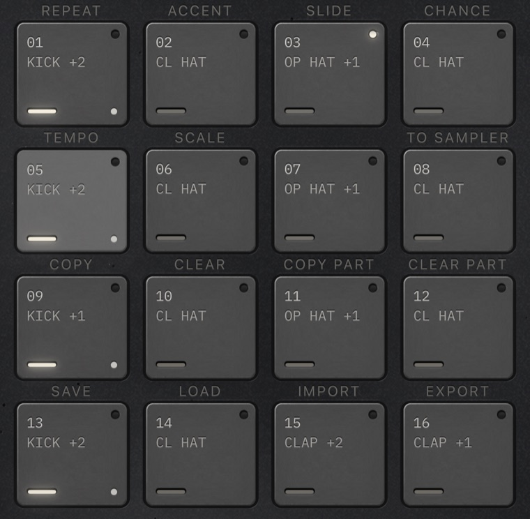
DRUMS · STEPS. Steps of the picked drum are bright, steps of other drums dim.
Lights and feel
White: on, picked, playing. Red: writing; a blinking red light means “tap again to confirm”. Orange: the next step of the tour.
Every key and pad has a light top right. On a pad, the light means “now” (picked, playing). The bar at the bottom means “something is there” (used, in the loop, changed).
Printed words are dark, like engraved stone. They glow white while 2ND is lit. A second function that is open lights its word.
Keys click and the switch snaps. Knobs click once per value, with a stronger click in the centre. Playing pads and setting steps give no haptic feedback. iPad and Mac have no haptics.
Pads play the moment you touch them.
Help on the device
Hold to learn. Hold any key for about half a second. It still does its job at once, and line 2 adds a short guide as scrolling text. Let go to stop it.
Printed words: tap 2ND, then hold the word’s pad or key. Pads have no hold help otherwise, because holding a pad records, holds a step or holds an effect.
When you pause. After about 1.5 s without input, line 2 explains where you are, e.g. TAP = LISTEN · ● = WRITE STEPS. A knob explains itself the same way after you stop turning: DECAY · HOW LONG IT RINGS. Any input hides it.
Quick tips answer what you just did, e.g. ● = WRITE STEPS when you try to set a step without ●.
Accessibility: VoiceOver and Voice Control use the English names and the same guides. Reduce Motion turns off the lamp test at start, the scenes and fades, and the tour glows steadily. Increase Contrast makes printed words and pad text brighter.
Someone lives in the box. Now and then a small figure appears in the pixel field. That is intended. Any input ends it.
15Kits, instruments, banks
DRUMS
With the switch on DRUMS, the 16 pads are the 16 drums of a kit. In LIVE a tap plays the drum and picks it. The knobs set TONE and DECAY of that drum. In SOUNDS a pad picks one of 16 kits, and the knobs set DRIVE · LEVEL of the drum you played last.
DRUMS · LIVE, kit PUNCH. Each pad carries its drum. The second function is printed above it.
The closed hat cuts off the open hat in every kit.
All 16 kits play at about the same loudness.
Kit
Source
Character
MODULAR
synthesised
hard, short
PUNCH
drum machine samples
punchy, clap up front
BLIP
analogue synthesis
tight, clicky, cowbell and shaker
BOOM
drum machine samples
deep kick, congas, claves, maracas
TINY
drum machine samples
bright, short, cymbals
HEAVY
drum machine samples
heavy, snap and cowbell
SOFT
synthesised
soft and long, wood, bell
HAZE
synthesised
deep, round, with room
IRON
analogue with recorded hit layers
rough, metallic, loud
DUSTY
samples
dusty, vinyl, pedal
RUSTY
acoustic kit
open
BRUSH
acoustic, brushes
brushes, stir, swish
STUDIO
acoustic studio kit
ghost notes, half-open
DRY
samples
dry, snap, splash
HAND
hand percussion
cajon, djembe, darbuka, bongo
RETRO
old kit, vintage miking
tight and loose hats
SYNTH
With the switch on SYNTH, the pads are notes of a scale. The lowest is bottom left, the root note is brighter. Each instrument plays one note per step, and notes may ring into each other. Scale, root and octave: 2ND, then SCALE. In SOUNDS a pad picks one of 16 instruments.
SYNTH · LIVE with ANALOG. Every pad plays a note of the scale.
Instrument
Type
Knobs in SOUNDS
ANALOG
bass, clean, two oscillators in unison
MORPH · LEVEL
SQUELCH
dedicated acid voice with diode filter, accent and slide (see below)
RESONANCE · ENV
FOLD
snappy pluck
MORPH · LEVEL
FM
electric piano with chorus
MORPH · LEVEL
WAVES
lead with vibrato and glide
MORPH · LEVEL
PHASE
stab
MORPH · LEVEL
ORGAN
organ with drawbars
MORPH · LEVEL
CHORDS
Every pad plays the chord of its scale degree. In MINOR, MAJOR, DORIAN and PHRYGIAN these are major, minor or diminished triads; SHAPE · MODEL turns them into sevenths. In the pentatonic scales, BLUES and CHROMA they are fifth or fourth chords.
MORPH · LEVEL
STRINGS
string machine
MORPH · LEVEL
SUB
sine one octave lower, down to C1 with octave −1
MORPH · LEVEL
SAX
multisampled tenor sax
SWELL · LEVEL
GUITAR
multisampled jazz guitar
SWELL · LEVEL
PLUCK
plucked string
MORPH · LEVEL
BELL
bell
MORPH · LEVEL
VOWEL
sings vowels, does not speak
MORPH · LEVEL
E-BASS
multisampled finger bass
SWELL · LEVEL
Every kick ducks the basses (ANALOG, SQUELCH, SUB, E-BASS) by up to 5 dB and the pads (ORGAN, CHORDS, STRINGS) by up to 3 dB. This is fixed, with no control, and sounds the same in the app, in EXPORT and in the AUv3. Kicks from the sampler do not duck.
SQUELCH
SQUELCH is a voice for acid bass lines, not a general-purpose synth.
Diode filter: gentler slope and softer resonance. At high resonance it loses more bass.
Accents build up: several accents in a row open the filter further each time. After a break, the first accent sounds normal again.
TONE = filter, DECAY = how fast the filter closes (0.05 to 2.45 s).
SOUNDS: RESONANCE and ENV (how far the filter opens on each note).
SHAPE · MODEL: OSC with two settings, saw or square, equally loud.
2ND, then ACCENT, left knob = BITE: how hard accents hit and how much they build up.
2ND, then SLIDE, left knob = GLIDE: the slide time.
SHAPE · DRIVE distorts after the voice. Its right knob is the level of SQUELCH.
SAMPLER
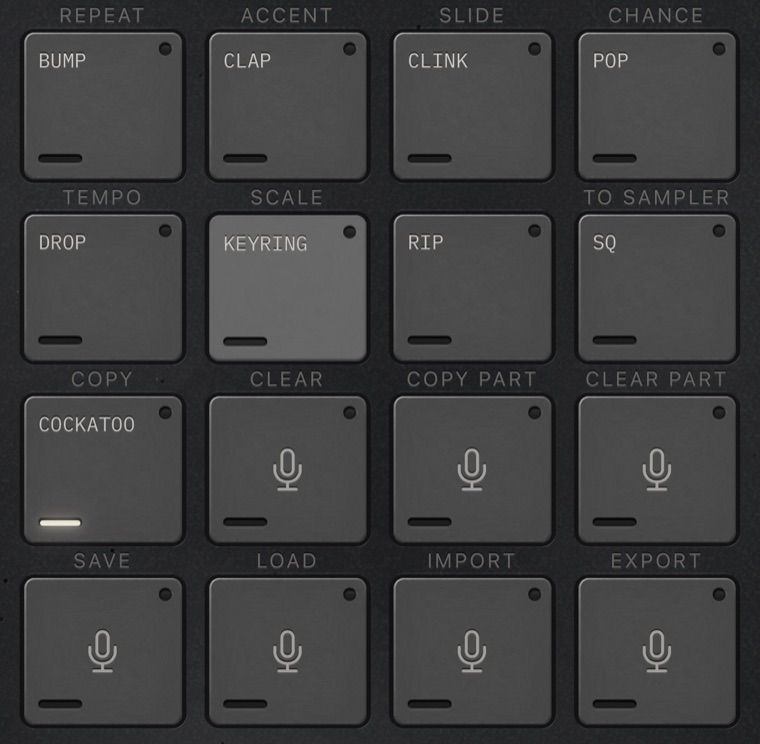
SAMPLER · LIVE, bank 1. Each pad plays a sound of the bank. Free pads show a microphone.
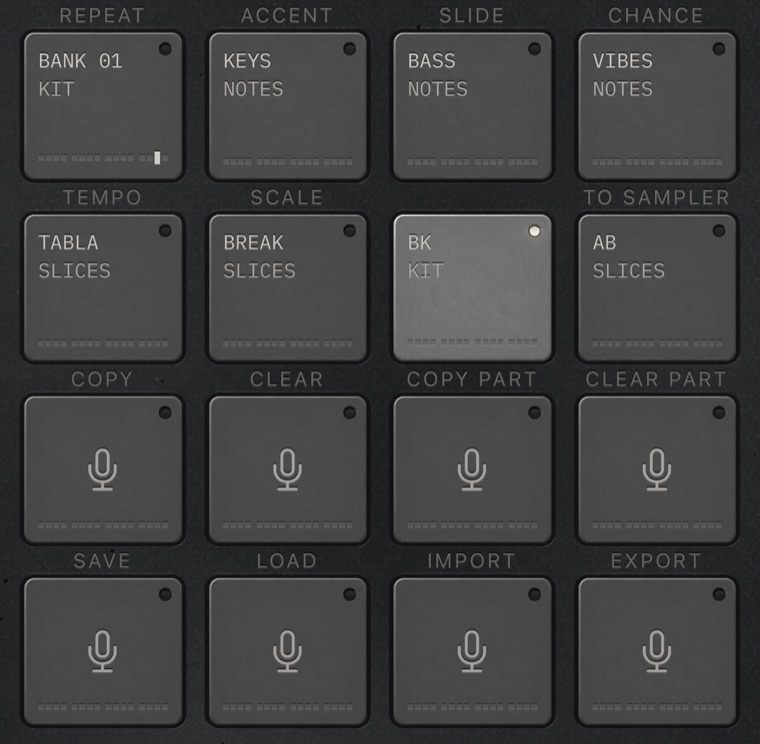
SAMPLER · SOUNDS. Each bank shows its name and type (KIT, NOTES, SLICES). Bank 7 here comes from a sample pack. Free banks show a microphone.
The sampler works like DRUMS. SOUNDS shows 16 banks, LIVE the 16 pads of the picked bank. Banks belong to the device, not to a track. So a recording stays, and every track and the AUv3 see the same sounds. Sound settings such as TONE, DECAY and SHAPE values belong to the track.
Type
What is in it
How it plays
KIT
16 single sounds, recorded pad by pad
like drums, each pad with its own steps
NOTES
one short sound with a pitch, tuned to the nearest C
on the pads in the scale
SLICES
one longer recording, cut at its hits into up to 16 pieces
each piece on a pad, like a KIT
SQUAWK decides the type from what you record. You never pick it in advance.
Factory banks: bank 1 is the start bank, a KIT with BUMP, CLAP, CLINK, POP, DROP, KEYRING, RIP, SQ and COCKATOO. Seven pads are free. Banks 2 to 4 hold KEYS, BASS and VIBES (NOTES). Banks 5 and 6 hold TABLA and BREAK (SLICES). Banks 7 to 16 are free.
Recording needs ● and a stopped loop. With the switch on SAMPLER, turn ● on. In LIVE, hold a pad: the recording goes onto that pad. In SOUNDS, hold a bank: the recording fills the whole bank as NOTES or SLICES. Let go to end, after 60 s at most. Without ●, a tap only picks.
Microphone access: iOS asks the first time ● goes on with SAMPLER picked. If you deny it, the display shows NO MIC · ALLOW IN SETTINGS.
After recording, silence is cut and the level is set. The pad gets the first free two-letter name (AA, AB …). Line 2 suggests SHAPE IT · NAME IT. While recording, the waveform runs through the pixel field.
Protection: if another track uses the sound, the first hold asks: USED IN 3 TRACKS · HOLD AGAIN.
Name a sound on the SHAPE page NAME. Clear it with RESET · SOUND.
TO SAMPLER (2ND, then the pad) turns any drum or synth sound, with all its settings, into a sample on the sampler pad you used last, or into a NOTES bank. No microphone needed.
IMPORT puts an audio file onto the sampler pad you used last, or makes it a NOTES bank.
Stereo: pack sounds, imported files and TO SAMPLER stay stereo. Microphone recordings and the factory banks are mono.
Memory: 200 s for all banks together. Stereo counts double. When it is full: SAMPLER FULL.
In SOUNDS the knobs set START and LEVEL. In LIVE, TONE is pitch and DECAY is length.
Sample packs
Put a WAV pack, as a zip or a folder, into Files › On My iPhone › SQUAWK › PACKS. SQUAWK reads new packs whenever you open it. It sorts the sounds by role and makes up to three banks, starting at bank 7: a KIT laid out like the factory kits, plus NOTES and SLICES.
The choice is not random. For each role, the most typical and the most different sound go onto the pads.
NOTES and SLICES are set to the same level. A KIT keeps its levels.
Line 2 reports the result, e.g. LO-FI BEATS → 3 BANKS · LB. The whole import is one undo step.
WAV, AIFF, FLAC, MP3, M4A and CAF are read. RAR and 7z are not: UNZIP FIRST. Damaged or oversized archives show ZIP DAMAGED or TOO BIG.
If a pack KIT bank is picked on the SAMPLER, STYLE puts the drum lines onto its pads instead of the kit.
From a Mac, you can copy packs to the iPhone through Finder file sharing.
16SHAPE: 16 pages
SHAPE opens 16 pages for the picked sound. A pad picks the page, the knobs set its pair, and the pixel field draws what it does. Each row has a theme: source, colour, envelope, movement. Values belong to the sound and are saved with the track. Pages that do nothing on this sound are dark. A bar on a page means it was changed.
The big line shows the page. Line 2 shows the instrument and the knobs, e.g. ANALOG · Ⓛ FILTER · Ⓡ RESO.
When stopped, each change plays the sound briefly. While playing, you hear it in the loop.
Double-tap a knob for the default. Every knob move is one undo step.
Leave with SHAPE again or LIVE. ● in SHAPE goes to LIVE with ● on.
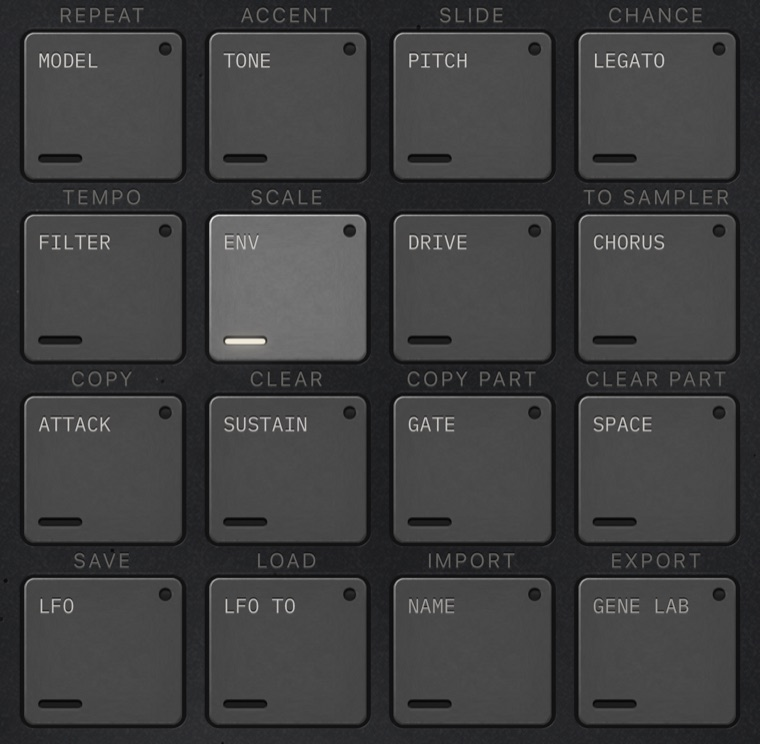
The 16 page pads in SHAPE, here with ENV picked.
Source
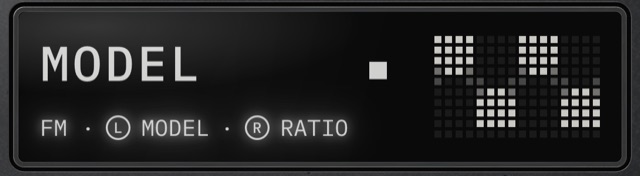
01MODEL
L MODEL; on SQUELCH: OSCR named per model (DETUNE, RATIO, CHORD, SPEAKER, BAND, MATERIAL, ENERGY …); on SQUELCH: none
Picks how the synth makes its sound: 22 models, from VA VCF to HAT, one per click. R sets the character of the model. Works on the synths whose SOUNDS knobs read MORPH · LEVEL. A changed model shows its name. On SQUELCH, L picks saw or square. Dark on SAX, GUITAR, E-BASS, drums and sampler.
YOYO (after MODAL) is a string of masses. Its overtones bloom and come back by themselves, like a yo-yo. With YOYO, R is ENERGY: 16 clicks in four zones. STILL (1–3) is a steady tone. BREATH (4–8) lets one overtone come and go; 6 is the default (double-tap). BLOOM (9–12) brings many overtones, then back home. STORM (13–16) never comes back. VELO per step scales the energy, so louder steps breathe faster and deeper. TONE sets the starting shape, from dark to plucked. Pause on ENERGY and line 2 explains the zone.
Pixel field with YOYO: the very first time, a short opening with the red dot. After that, the curve of how the sound comes back. While a note sounds, the string moves live.
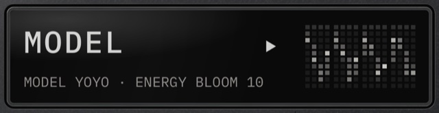
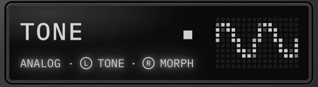
02TONE
L TONE (same value as the knob TONE)R as in SOUNDS: MORPH, SWELL or ENV; on synthesised kits CRACK
Sets the colour of the source. On synthesised kits (MODULAR, BLIP, SOFT, HAZE, IRON), CRACK sets the click of the kick, the rattle of snare and clap, and the noise of the hats. Dark on sample kits.
03PITCH
L TUNER BEND
Tunes the sound by ±24 semitones. R lets the pitch fall or rise after the hit.
04LEGATO
L MODER GLIDE
L picks MONO or LEGATO, R sets the glide time. Synth instruments only.
Colour
05FILTER
L FILTER (same value as FILTER after 2ND)R RESO
DJ filter: centre off, left low-pass, right high-pass. R sets the resonance.
06ENV
L AMOUNTR F-DECAY
Filter envelope with up to ±6 octaves. R sets how fast it decays.
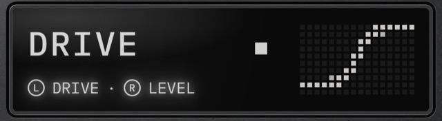
07DRIVE
L DRIVE (on drums the same value as DRIVE in SOUNDS)R LEVEL
Saturation and level of the sound.
08CHORUS
L CHORUSR SWIRL
L sets the chorus amount (stereo width), R its rate from 0.1 to 6 Hz. Far right it is almost vibrato. Synth instruments except SQUELCH.
Envelope
09ATTACK
L ATTACK (same value as ATTACK after 2ND)R DECAY (same value as in LIVE)
Fade-in and decay.
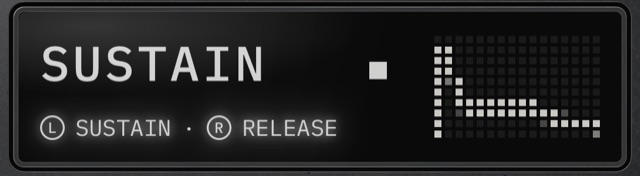
10SUSTAIN
L SUSTAINR RELEASE (same value as GATE, right)
How loud a held note stays. R sets how long it rings after release. With page 09 the whole envelope sits on two pages. Synth instruments except SQUELCH.
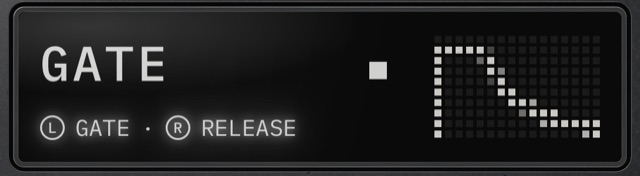
11GATE
L GATER RELEASE
Note length in the sequencer, and the ring-out after release.
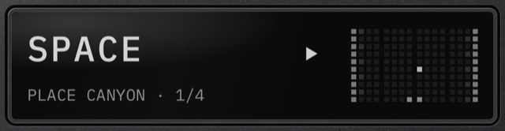
12SPACE
L DISTANCER PLACE
The sound stands at a place, and the place is built to the tempo. DISTANCE has 16 steps from 0.3 to 40 m; the default is 2.4 m. Nearer is louder, farther is quieter, darker and later. Line 2 shows e.g. DISTANCE 8 M.
PLACE has 16 places: BOX, BOOTH, KITCHEN, CLUB, HALL, CHURCH, CAR PARK, TUNNEL, YARD, CANYON, FIELD, FOREST, LAKE, SNOW, NEXT ROOM, STREET. BOX is the default, with the usual reverb and delay. Where a place has walls, they answer on the tempo grid, e.g. PLACE HALL · 1/16. Pause on PLACE and line 2 describes the place.
The pixel field shows the place from above, with you at the bottom. On each hit, every wall lights up when its reflection reaches you. Bass stays in the centre at every place. TO SAMPLER always renders in BOX.
Movement and extras
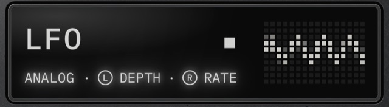
13LFO
L DEPTHR RATE
Depth and rate (0.1 to 20 Hz) of the LFO. It restarts with every hit.
14LFO TO
L TARGETR WAVE
L picks the LFO target (PITCH, FILTER, TIMBRE, LEVEL), R its waveform (SIN, TRI, SQR, SAW, S&H).
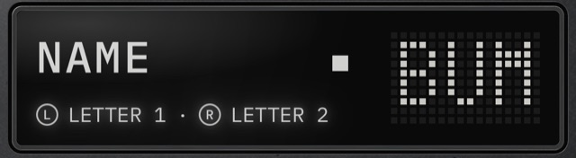
15NAME
L LETTER 1R LETTER 2
Gives a sampler sound a two-letter name. It applies at once and shows in the pixel field. Sampler sounds only.
GENE LABon sampler pads
16GENE LAB
L PARTNERR MUTATE
Crosses the sound with a partner over four genes: CLICK (the attack), BODY (the tones in it), NOISE (noise and air) and TAIL (the decay). PARTNER picks the second sound, similar ones first; on a pack sound, the pack comes first. MUTATE has 16 clicks, from your own sound through mixes to the partner itself. Each click puts the result on the pad and plays it. The knobs follow your finger smoothly; only the click you stop on is computed. Pause on PARTNER or MUTATE and line 2 explains it. When you leave the page, the result stays, with a name mixed from both parents. One undo step per visit. Works on sampler pads in KIT and NOTES banks. Not on SLICES, not on drums, and not in the AUv3.
17MASTER: 16 effects
MASTER puts effects on everything. In LIVE an effect works while its pad is held. The left knob sets AMOUNT, the right knob the character of the effect you played last. The big line shows the effect and the pixel field draws its shape. With STEPS and ● you write effects onto steps: L picks the effect, R its amount.
AMOUNT fully left is no effect, for all 16 effects. Up to about a quarter, the effect fades in smoothly. So you can turn an effect in and out live while you hold it. The default is 70 %.
With ● and ▶ in MASTER · LIVE, held effects are recorded onto steps.
When stopped, holding an effect repeats the last sound in eighths, so you hear the effect.
In MASTER · STEPS without ●, a tap on a step with an effect shows it. With ●, a tap on an empty step sets the effect picked with the left knob, and a tap on a step with an effect removes it. The right knob sets its amount; here too, fully left is no effect.
All effects work in stereo and keep the stereo image.
MASTER · LIVE. Effects in four rows by type.
Filter
01LOPASS
L AMOUNTR PEAK
Low-pass on everything, closes with AMOUNT. PEAK sets the resonance.
02HIPASS
L AMOUNTR PEAK
High-pass on everything, opens with AMOUNT. PEAK sets the resonance.
03SWEEP
L AMOUNTR SPEED
A low-pass that moves in time and speeds up with more amount. SPEED steps in note values.
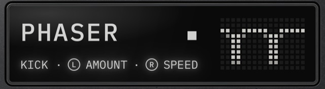
04PHASER
L AMOUNTR SPEED
Phaser with moving notches. SPEED is the rate of the movement.
Rhythm
05STUTTER
L AMOUNTR SPAN
Repeats the same slice at even intervals. SPAN is the slice length, in steps of two.
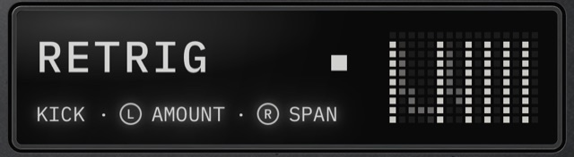
06RETRIG
L AMOUNTR SPAN
Repeats that get shorter and denser. SPAN is the slice length.
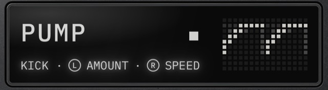
07PUMP
L AMOUNTR SPEED
The level ducks on every quarter and comes back. AMOUNT is the depth, SPEED steps in note values.
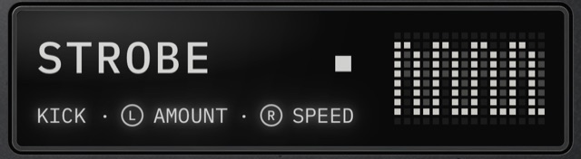
08STROBE
L AMOUNTR SPEED
Square gate in 16ths, in 32nds with more amount. SPEED steps in note values.
Time
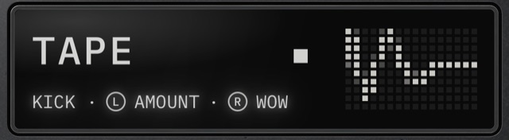
09TAPE
L AMOUNTR WOW
Tape stop: tempo and pitch wind down. WOW adds wobble (default 0).
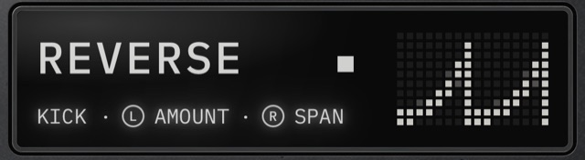
10REVERSE
L AMOUNTR SPAN
Plays what you just heard backwards. SPAN is the slice length.
11ECHO
L AMOUNTR TIME
Echo on everything. TIME is the distance in steps: 1, 2, 3, 4, 6 or 8 (default 3). More AMOUNT means longer repeats. Repeats bounce left and right.
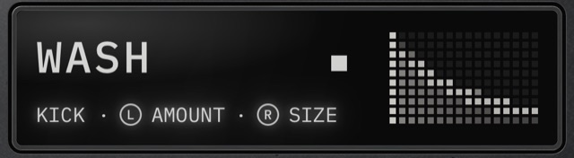
12WASH
L AMOUNTR SIZE
Long reverb on everything. SIZE is the room size.
Colour
13CRUSH
L AMOUNTR BITS
Bitcrusher. BITS is the resolution, coarser to the left, finer to the right.
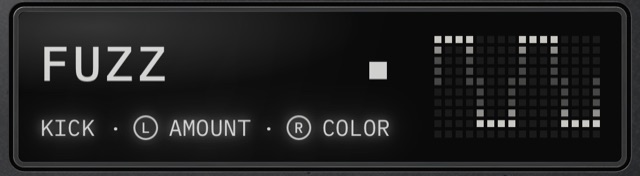
14FUZZ
L AMOUNTR COLOR
Distortion that clips the wave top and bottom. COLOR goes from dark to bright.
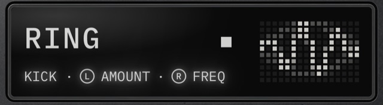
15RING
L AMOUNTR FREQ
Ring modulator. FREQ is the frequency of the carrier.
16WARP
L AMOUNTR SPEED
Wobbling pitch: the wave is squeezed and stretched in time. SPEED is the wobble rate.
MUTE and SOLO
2ND, then SOUNDS opens MUTE. The pads show the drums of the picked kit, the synth instruments, or the pads of the picked bank. A tap silences one sound or brings it back. A silenced pad shows a speaker symbol.
In MUTE, tap the lit part on the switch: it plays alone, and all sounds of the other two parts go quiet. Tap again for all. SOLO is one undo step; single mute taps are not. 2ND goes back to SOUNDS, LIVE goes home.
18All second functions
Tap 2ND, then the pad or key. Pad rows are grouped by theme.
A step fires 2, 3 or 4 times in a row, for rolls. Each tap counts up, one more tap turns it off.
ACCENT
A step hits harder. The left knob (BITE) sets how hard: centre is the default, far left no effect, far right double. BITE is stored per sound.
SLIDE
A note glides into the next one. The left knob (GLIDE) sets the glide time per sound. It is the same value as on SHAPE · LEGATO.
CHANCE
Each tap on a step goes one further: always → 75 % → 50 % → 25 % → 1:2 → 2:2 → 1:4 → 4:4 → always. 1:2 plays in the first of every two passes through the loop, 2:2 in the second (the answer). 1:4 plays in the first of every four passes, 4:4 in the fourth (the fill). Passes count from the start, or from the change to this loop. Skipped steps play nothing, not even MIDI.
TEMPO
Left knob = BPM, right knob = swing, pads = loop length. 2ND or any key closes it.
SCALE
Pads pick one of eight scales: PENT MIN, PENT MAJ, MINOR, MAJOR, DORIAN, PHRYGIAN, BLUES, CHROMA. Left knob = ROOT, right knob = OCTAVE of the instrument (−1 to +1, not on drums). Existing steps keep their notes.
TO SAMPLER
Turns the shaped sound into a sample on the sampler pad you used last.
COPY
Copies this loop to the loop you tap. You keep working on the copy.
CLEAR
Empties this loop, all parts. Line 2 reminds you: CLEARED · 2ND ● = UNDO.
COPY PART
Copies the steps of the picked kit, instrument or bank to another one, which plays them with its own sound.
CLEAR PART
Empties only the picked kit, instrument or bank in this loop.
Silence single sounds; SOLO for a whole part. See chapter 17.
RESET
Back to how it came, from one sound to everything. See below.
CHAIN
Shows the chain. The first tap starts a new chain from that loop, further taps add to it, up to 64. ▶ plays the chain. Its position shows in the status line, e.g. 1/4. Tapping a single loop in PATTERN ends the chain. 2ND or STEPS leaves CHAIN; the chain stays.
UNDO
Takes back the last change, up to 64 steps. 2ND, then ● again goes further back. Line 2 names what was undone, e.g. UNDO · CLEAR. LOAD starts a new undo history.
STYLE: the 16 pieces
The pieces use only factory sounds. Each sets tempo, swing, key and kit, and the sound settings of what it plays. A tap keeps the track name, the effect amounts and the sampler banks.
Pad
Piece
Style
BPM
Key
Kit
1
RAIN
UK garage, 2-step; plays on the first start
132
G minor
PUNCH
2
NIGHT
acid techno with SQUELCH
128
A minor
PUNCH
3
FEVER
post-club dembow
100
D minor
BOOM
4
COMET
jungle with chopped breaks
172
F minor
DRY
5
FOUND
beat from everyday sounds
90
D minor
DUSTY
6
NEON
house with chords
122
G minor
PUNCH
7
GOLDEN
pop with guitar
110
A minor
STUDIO
8
HOUSE
genre
124
G minor
PUNCH
9
LOFI
genre
78
D minor
DUSTY
10
DISCO
genre
118
A minor
PUNCH
11
TRAP
genre
140
F minor
HEAVY
12
DEEP
genre
120
D♯ minor
SOFT
13
TECHNO
genre
132
F minor
IRON
14
BREAKS
genre
130
D minor
DRY
15
AMBIENT
genre
80
C dorian
HAZE
16
DUB
genre
118
A minor
HAZE
The seven full pieces have four loops each. Loop 1 is a full groove that leaves one part free to play along. Loops 2 to 4 bring build-up, break and peak. Find them with PATTERN.
CHANCE keeps four bars alive inside one loop (1:2 and 2:2 as call and answer, 4:4 as a fill).
The sound comes from the sound settings, not from locks on every step. So every knob works.
Without its own name, the track is called after its piece, e.g. RAIN · PTN 01 · 132 BPM. SAVE gives it a two-letter name.
Tracks and files
A track is a whole project: 16 loops, chain, tempo, swing, scale, root, all sound settings, SHAPE values, effect characters, mutes, octaves and the last picked sounds. There are 15 slots, TR 01 to TR 15. All of them are yours.
Function
How
SAVE
SAVE · PICK SLOT. The current slot saves at once. A free slot takes the track, and you keep working there. A used slot asks first: the red light blinks and the display says OVERWRITE TR 03? TAP AGAIN. The last pad (FILE) writes a backup file.
Names
Exactly two capital letters, no keyboard. In SAVE, knob L picks the first letter and knob R the second. SAVE suggests the first free name. On a new slot, untouched knobs use the suggestion. If a name is taken, the next free one is used. The confirmation reads like SAVED TR 05 · AC.
LOAD
LOAD · PICK TRACK. A used slot opens its track. The current track is saved first. A free slot starts a new, empty track (NEW · TR 05, 120 BPM); the first free slot is labelled NEW. Undo starts fresh after LOAD.
Backup
SAVE, last pad (FILE): a .squawk file with the track and the sampler banks it uses, including your recordings. File name e.g. “TR 03 2026-11-11 14-03.squawk”. Acts when you lift your finger; slide off the pad to cancel.
IMPORT
Shows only backups and audio files. A backup replaces the current track (one undo step) and brings its banks onto the device. An audio file lands on the sampler pad you used last. Acts when you lift your finger.
EXPORT
WAV of the pattern (4 passes) or of the chain (1 pass). It loops cleanly: echoes from the end are already at the start, and the length is exact. 24-bit with dither, 48 kHz, stereo. File name e.g. “SQUAWK TR03 PTN01 128BPM.wav”. Acts when you lift your finger.
Autosave
About one second after every change, into the current slot. In this beta, only slots you saved with SAVE survive quitting the app (chapter 21).
RESET (2ND, then SHAPE)
Going back to how it came is called RESET and lives in one place. Every pad asks first (red light, … ? TAP AGAIN). Only the second tap acts.
Pad
What
Undo
SOUND
This one sound back to how it came. On your own recording, it clears the pad.
yes
PART
The picked kit, instrument or bank back to how it came. Recordings stay.
yes
TRACK
Empties this track. Its name stays. Finished pieces are under STYLE.
yes
ALL TRACKS
Empties all 15 tracks. Names and recordings stay.
no
ALL BANKS
All sampler banks back to how they came. Your recordings are deleted.
no
LIKE NEW
Everything as freshly installed: all tracks, names, banks and recordings are deleted. RAIN waits in TR 01, and the tour starts again.
no
19MIDI, AUv3, iPad and Mac
MIDI (in and out)
Notes, clock, start, stop, continue, song position. Ports and virtual ports are called SQUAWK. USB MIDI works directly. Bluetooth MIDI must be paired first, for example in a host app.
Fixed channels in the app: synth 1, sampler 2, drums 10. Notes 36 to 51 are pads 1 to 16; on the synth, note 36 is C2. Notes play like pads, and velocity is used.
Outgoing notes carry the velocity of the step (VELO), and accents go out louder.
Program change 0 to 15 on any channel picks pattern 1 to 16, at the end of the current pattern.
Whoever starts first leads. If SQUAWK starts itself, it sends clock and ignores incoming clock. Otherwise it follows the incoming clock and keeps running if the clock stops.
SQUAWK filters its own echo and listens to one clock source at a time.
The light at “MIDI IN · OUT” shows the connection. While MIDI is connected, audio keeps running in the background.
AUv3
In the host the plug-in is listed as “Holzäpfel: SQUAWK”. It shows the same interface and fits any window from 300 × 300 pt. One instance per song is enough, since it holds all three parts.
MIDI in the plug-in is omni: notes on every channel play the part selected on the switch, with the same note map as above. Outgoing MIDI stays on the fixed channels.
Tempo and swing are host parameters. The host saves the state. The engine runs at 48 kHz and converts other rates. The plug-in reports 55 samples of latency.
LOAD in the plug-in opens the tracks of the app, read-only, as one undo step. The sampler banks are the same as in the app.
Not in the plug-in: microphone, SAVE to slots, reading sample packs, GENE LAB and the tour. RESET offers only SOUND, PART and TRACK. One stereo output.
iPad and landscape
The same parts, arranged to fit the window. No new words, no menu.
Tall window: the iPhone layout, scaled up.
Wide window (iPad landscape, many host windows): switch and pads on the right, display, knobs and keys on the left.
Very flat window: a strip with the keys at the edge.
The iPhone app stays in portrait. The iPad app runs in all four orientations.
Mac with Apple silicon
A click is a tap, click and hold is a hold. Drag knobs vertically, double-click to reset. EXPORT and backups go through the Mac share menu (“Save”).
There is only one pointer. Two-finger moves do not work: hold a step and turn a knob, parameter locks, two pads at once, hold an effect and turn AMOUNT. Set the knobs first instead.
No haptics on the Mac.
20Words
How the parts fit together
Track: a whole project. There are 15 track slots.
Pattern (loop): each track has 16. A loop has up to 16 steps and plays in a circle. Pads show them as P 01 to P 16, the status line as PTN 01.
Part: DRUMS, SYNTH or SAMPLER, picked with the switch.
Kit, instrument, bank: the 16 choices inside a part. Each sound in them has its own steps.
Lane: the 16 steps of one sound in one loop.
Step: one sixteenth note of the loop. One pad in STEPS.
Pass: one time through the loop. CHANCE counts passes.
Chain: loops played one after another, like a song.
Piece: one of the 16 finished tracks under STYLE.
Slot: one of the 15 places for a track, TR 01 to TR 15.
SQUAWK words and usual words
Two SQUAWK words mean something different from the usual. They are marked.
SQUAWK
Usual term
Note
TRACKdifferent
project, set
A whole project. 15 slots.
PART
track
DRUMS, SYNTH, SAMPLER. COPY PART, CLEAR PART and RESET · PART act on the picked kit, instrument or bank.
PATTERN
pattern, loop, clip
Up to 16 steps, 16 per track.
Step with ●
trig, step recording
STEPS, ●, then tap.
● and ▶ in LIVE
live recording, overdub
Snaps to sixteenths.
Hold a step, 2ND, turn a knob
parameter lock
TONE and DECAY only.
Hold a step, turn the left knob
note or drum of a trig
Moves the step, sets no lock. Hint: 2ND + KNOB = LOCK.
CHANCE
probability, trig conditions
75/50/25 %, 1:2, 2:2, 1:4, 4:4.
REPEAT
ratchets
2×, 3×, 4×.
RETRIGdifferent
often a per-step ratchet
Here an effect on everything in MASTER.
CHAIN
pattern chain
Up to 64 links, no song editor.
MASTER · LIVE
performance FX, punch-in FX
Works while held.
MASTER · STEPS
FX locks
A separate effect lane.
SHAPE
sound edit
16 pages with pixel graphics.
TO SAMPLER
resampling
As a one-shot, no recording.
RESET
init, factory reset
From one sound to everything.
EXPORT
bounce, render
Everything as WAV. Single parts via SOLO.
Engine, “Plaits”
synth model
Most synths are built on Mutable Instruments Plaits. Their SOUNDS knobs read MORPH · LEVEL.
21Beta notes and feedback
A fresh start each time you open the app after quitting it. In TestFlight builds, SQUAWK starts like the very first time after you quit it, after iOS closed it, or after an update. Coming back from another app is not a fresh start.
Kept: every slot you saved with SAVE, including everything saved there automatically afterwards. All sampler banks, with your recordings and pack sounds.
Gone: work you never saved: the start piece you played with, a STYLE piece you never saved, and NEW tracks without SAVE.
After the restart: RAIN sits in the first free slot and is the current track. The tour starts again. Your saved tracks wait in their slots: 2ND, then LOAD, then tap the pad that shows your two letters.
The plug-in is not affected; there the host app keeps the state.
So: to keep something, 2ND, then SAVE, and tap a slot.
Things to try
Outside the beta, each start shows one of these tips in line 2, from simple to deep. In this beta you will mostly see PRESS ▶ TO PLAY. Here they are:
2ND, then STEPS: STYLE, 16 finished beats to build on.
● and ▶ record what you play on the pads. It adds up, like a tape.
SAMPLER, stopped: press ●, hold a pad and make a noise. It records until you let go.
Turn TONE and DECAY while it plays. 2ND, then a knob sets them to FILTER and ATTACK.
SYNTH, SOUNDS, CHORDS: every pad plays a chord that fits the scale. 2ND, then SCALE changes it.
SAMPLER, stopped: press ●, in SOUNDS hold a free bank and count to eight. Every number becomes a pad.
2ND, then CHANCE: steps that play only sometimes, so the loop stays alive.
MASTER, then STEPS: effects on single steps.
SHAPE, page GENE LAB on a sampler pad: cross two sounds.
Please try in this build
The first five minutes (chapter 2), once, exactly as written. Tell us where you got stuck.
Follow the tour once to the end. Next time, leave it halfway with a different key.
SYNTH, SHAPE, page MODEL: turn the left knob to YOYO. Play a few notes and turn ENERGY from STILL to STORM. Set steps with different VELO.
SHAPE, page SPACE: put the snare in CANYON or YARD and change the tempo. The walls move with it. Try DISTANCE near and far.
MASTER, LIVE: hold an effect and turn AMOUNT slowly from fully left. There should be no jump and no click.
GENE LAB on a sampler pad: turn PARTNER and MUTATE fast, then pause.
Sending feedback
Screenshot: take a screenshot in SQUAWK, tap the thumbnail, then tap the share button and choose “Share Beta Feedback”. Add a line of text.
Without a screenshot: open the TestFlight app, pick SQUAWK, tap “Send Beta Feedback”.
After a crash, TestFlight offers to send a report. Please accept and add what you were doing.
Helpful in every report: what you did, what you expected, what happened. Which keys were lit, and what the display said. Headphones, audio interface or host app, if any.
Sound reports: name the track or STYLE piece, the loop and the tempo from the status line.
Please test especially
USB audio interfaces with sample rates other than 48 kHz.
MIDI clock from a computer or hardware over long sessions.
Several plug-in instances in one host, and reopening host projects (the sampler banks should be found again, without copies).
GarageBand and Logic on the Mac, and microphone and MIDI on the Mac.
Sample packs from your own library.
Known limits
No Ableton Link.
No stems. Export single parts via SOLO.
No MIDI CC. In the plug-in, only tempo and swing are host parameters.
Each synth instrument plays one note at a time. CHORDS plays one chord per step.
At most 16 steps. One loop length for all parts. No triplets.
Live recording snaps to sixteenths.
Step locks for TONE and DECAY only.
GENE LAB works on sampler pads only.
At most 16 sounds can stand at a place other than BOX at once. A 17th plays in BOX.
The plug-in has one stereo output.
On the Mac there is one pointer, so no two-finger moves.
Bluetooth headphones add delay, as in every app. SQUAWK does not make up for it.
By design
These will not come, because they would turn the device into a small studio program: piano roll, song arrangement editor, mixer page, effect racks, menus, a second screen, hidden key combinations, a keyboard for names, typing in numbers for loops.